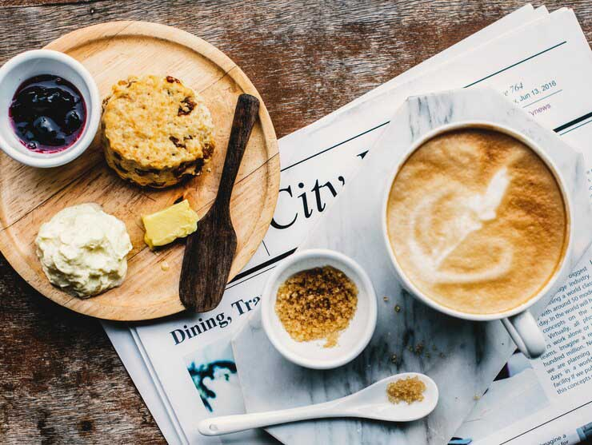

Cooking Tips and Techniques
Cooking is a blend of science, art, and creativity, where mastering essential techniques and understanding ingredients can elevate every dish. From perfecting knife skills to learning the best cooking methods like sautéing, roasting, or braising, each step contributes to the final outcome. Proper seasoning, temperature control, and using the right cookware are crucial for bringing out the flavors in your meals. Additionally, making homemade stocks and sauces, as well as taking the time to plate and present your dishes thoughtfully, can turn simple recipes into impressive meals. Above all, patience and practice are key—cooking is a journey that improves with every dish you prepare, leading to a satisfying and rewarding experience in the kitchen.

Essential Knife Skills for Beginners
Mastering essential knife skills is crucial for any beginner cook, as it lays the foundation for efficient, safe, and enjoyable cooking. A sharp, properly maintained knife improves your performance in the kitchen while reducing the risk of accidents. The most fundamental tool in any kitchen is the chef's knife, which is versatile enough to handle tasks like chopping vegetables, mincing garlic, and slicing meat. One of the first things to master is the proper grip. The pinch grip, where you hold the blade between your thumb and index finger while wrapping the other fingers around the handle, provides the best control. This technique allows for more accurate cuts with less effort and fatigue. Another technique to perfect is the rocking motion used in chopping, which helps you cut ingredients like onions and garlic with fluid, controlled movements.
Equally important to mastering technique is maintaining safety in the kitchen. The claw grip is an essential safety technique that helps you keep your non-dominant hand safely away from the blade while cutting. By curling your fingers in and using them as a guide, you can ensure that your hand is out of harm's way. It’s also important to choose the right tools. A sturdy, non-slip cutting board is essential to prevent accidents and damage to your knife. Wooden or plastic boards are ideal for preserving your knife’s sharpness, while glass or marble surfaces can dull the blade quickly. Once you’ve finished working with your knives, proper maintenance is vital. Regular honing with a steel rod helps maintain the blade's edge, and sharpening restores its sharpness over time. A dull knife can actually be more dangerous than a sharp one because it requires more force, which can lead to slips and injuries.
Lastly, practice and patience are key to improving your knife skills. Begin with softer ingredients and gradually work your way up to tougher ones. With time, you’ll develop the speed, accuracy, and confidence needed to tackle any cutting task. As your skills improve, you’ll find yourself working faster and more efficiently, making food preparation both enjoyable and effective. Mastering knife skills will not only enhance your cooking experience but also make you a safer and more accomplished chef. With continued practice, you’ll become more comfortable and proficient in the kitchen, setting the stage for a successful culinary journey.
How to Make Homemade Pasta
Mastering essential knife skills is crucial for any beginner cook, as it lays the foundation for efficient, safe, and enjoyable cooking. A sharp, properly maintained knife improves your performance while reducing the risk of accidents. The chef's knife is the most fundamental tool in the kitchen, versatile enough to handle tasks like chopping vegetables, mincing garlic, and slicing meat. One of the first things to master is the proper grip. The pinch grip, where you hold the blade between your thumb and index finger while wrapping the other fingers around the handle, provides the best control. Another technique to perfect is the rocking motion, especially when chopping ingredients like onions and garlic, which allows for controlled, fluid movements. The claw grip is also essential for safety, keeping your non-dominant hand safely away from the blade. By curling your fingers and using them as a guide, you ensure your hand remains out of harm's way.
Equally important is maintaining your knives. A sturdy, non-slip cutting board is essential for safety and preserving the knife’s sharpness. Wooden or plastic boards are ideal, while glass or marble surfaces can quickly dull the blade. Regular honing with a steel rod maintains the edge, while sharpening restores its sharpness over time. It’s also important to use proper cutting motions for different tasks. With practice, you’ll develop speed, accuracy, and confidence in the kitchen. Start with softer ingredients and progress to tougher ones, and you'll gradually build the skills to work more efficiently and safely. With dedication and time, your knife skills will improve, making food preparation not only easier but more enjoyable.